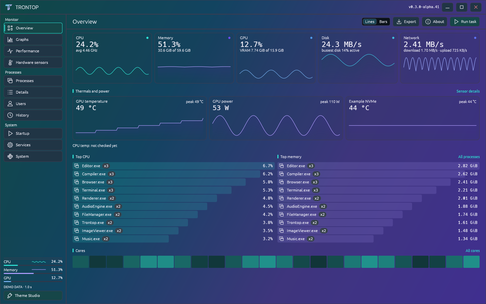
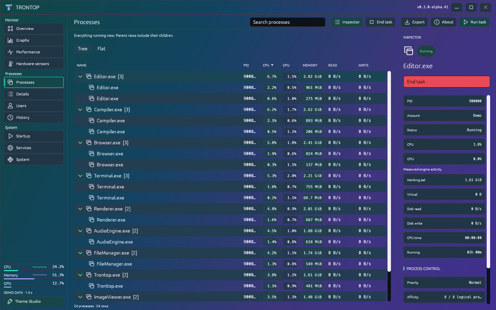
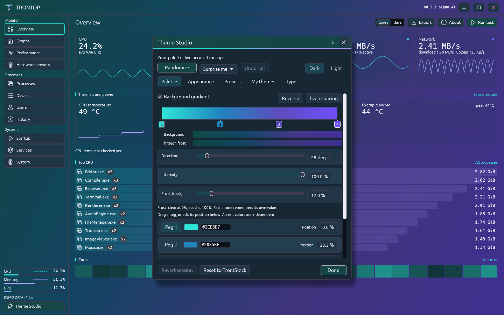

A native Windows task manager
Your PC.
In full color.
See what’s busy. Find what’s hungry. Make the whole thing yours.

Real Trontop UI, rendered with demo data. Select a theme or open the image for a closer look.
The page you leave open.
CPU, memory, GPU, disk and network at a glance. Temperatures and power where your hardware exposes them. The busiest apps right underneath.
Built with Rust + eguiOne portable executableNo account or telemetry uploads
Pick a mood.
Then mess with it.
Quiet charcoal, bright gradients, or daylight. These twelve looks are downloadable themes, and every color stays editable.
Open any shot at full size. Download its JSON, then import it in Theme Studio.
Pretty useful.
The color is personal. The counters still have a job to do.
↳Find the hog.
Keep the context.
Search process trees or switch to a flat list. Inspect a process without losing your place. End task stays within reach and asks for confirmation.
CPU affinity and priority controls are there when you need them, with Windows permission checks.

A theme editor.
Not just a theme menu.
Move gradient stops. Push the intensity. Dial back the frost. Adjust text contrast, typography and scale.
Roll a ColorMagic palette and undo it if you want. Save, export and share your favorites. Even the T mark follows your colors.

Lines or bars.
Your call.
Switch styles from the toolbar. Keep a history wall open, or let the animated tray meter show CPU activity while Trontop is tucked away.
Before you run it
This early build is unsigned, so Windows may show an unknown-publisher warning. Check the release source and checksum before deciding to run it.
Sensor availability depends on your hardware and drivers. CPU temperature needs a supported external sensor source. Missing readings stay marked unavailable.
Clean-machine, broader hardware and some native dialog/service-action checks remain open. This is a development preview, not a stable release.
A few things to know.
Is it open source?
It’s source available under Apache 2.0 with Commons Clause 1.0. You can inspect, build and modify it, and use it personally or at work. Redistribution must retain the applicable credits and terms. The Commons Clause restricts selling products or services whose value derives entirely or substantially from Trontop, so this is not an OSI open-source license. Read the complete terms.
Does Trontop upload anything?
The app collects system information locally. It has no account, analytics or telemetry upload. Settings and bounded failure records stay under your Windows user profile. Exports are your choice; private fields are excluded by default.
Does it replace Windows Task Manager?
It’s a standalone alternative for monitoring and process work. It does not replace the Windows component or take over its keyboard shortcut, and it doesn’t yet have complete Task Manager feature parity.
Can I share a theme or report a bug?
Yes. Export a theme from Theme Studio and share the JSON. For a bug report, include the version and a support report from About. Review any screenshot or export before sharing it. Open an issue.
{kind=link}
{kind=link}
{kind=link}
{kind=link}
{kind=link}
{kind=link}
{kind=link}
{kind=link}
{kind=link}
{kind=link}
{kind=link}
{kind=link}
{kind=link}
{kind=link}